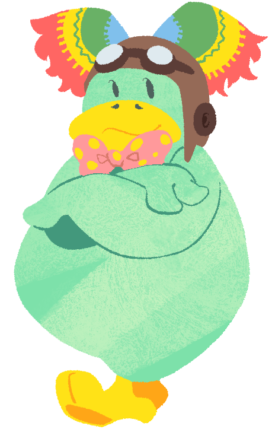

Totorin (Male)He is Kururin's father. While he does not appear in Kuru Kuru Kururin, he did appear in Kururin Paradise and Kururin Squash! He is an advanced pilot, having many years of experience, and is even an old friend of Teacher Hare. He also built the Helirin. In Kururin Paradise, it is revealed that he is the leader of the Magic Group, much to the surprise of Kururin. He is shown to be very proud of his eldest son's achievements, but believes he still has more to learn. In Kururin Squash!, he goes on a trip with Kururin and then stays home for a break from his magic work, but he is eventually kidnapped by Professor Isogashima, and Kururin has to save him and Kakarin from his clutches. |
 |